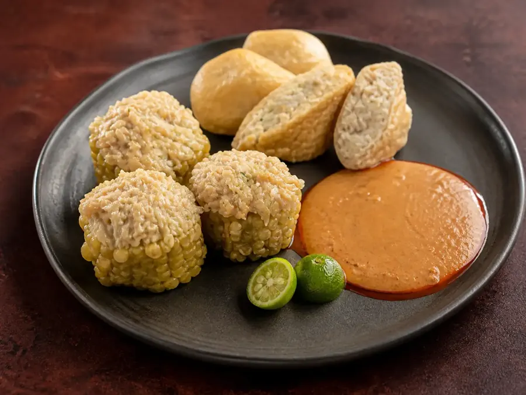
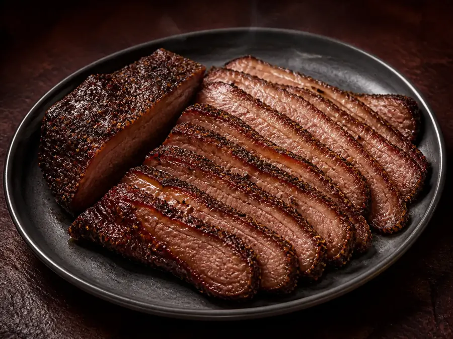
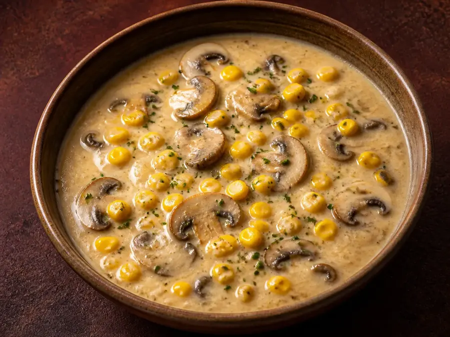
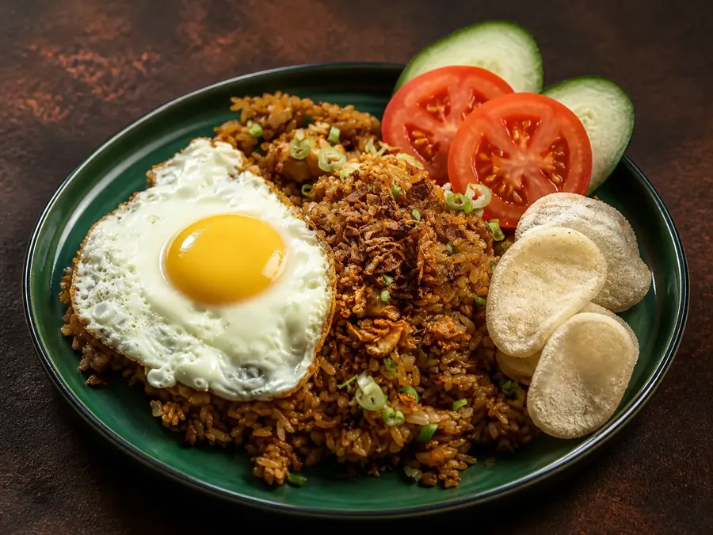
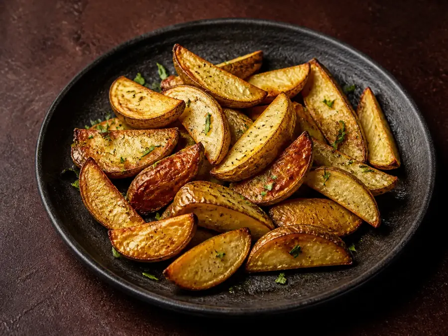
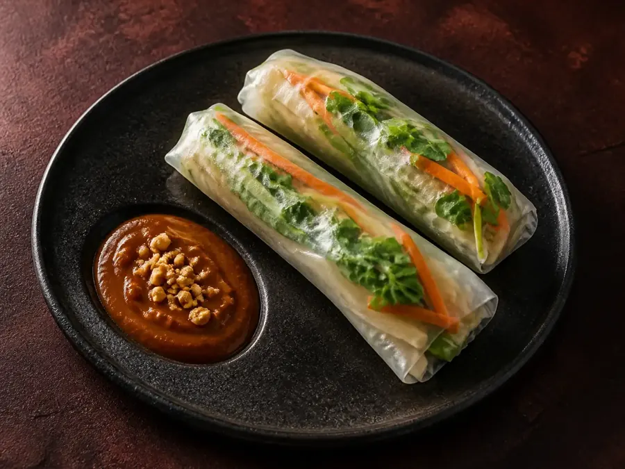

50 Resep Halal
Dua ide masakan untuk setiap varian. Bahan bertanda ELEMENTIA bisa diklik untuk membeli.
Semua resep untuk 2 porsi kecuali disebutkan lain. Nama bahan bertanda seperti ini adalah produk ELEMENTIA — klik untuk membuka halaman pembelian.
Sup Iga Sapi Lada Putih (ala Bak Kut Teh, halal)
Bahan (8)
- 400 g iga sapi
- 1,5 sdm Lada Putih Butir Elementia, digeprek Lada Putih Butir
- 8 siung bawang putih, utuh, dikupas
- 2 ruas jahe, digeprek
- 1 sdm kecap asin
- 1 sdt garam
- 1 liter air
- Pelengkap: nasi, cabai rawit, irisan bawang putih goreng Bawang Putih Goreng
Cara membuat (5)
- Rebus iga sebentar 5 menit, buang air rebusan pertama, bilas iga.
- Masukkan iga, lada, bawang putih, jahe, dan air ke panci. Rebus dengan api kecil.
- Presto 30 menit, atau panci biasa 1,5 sampai 2 jam hingga empuk.
- Tambahkan kecap asin dan garam. Koreksi rasa.
- Sajikan panas dengan nasi dan cabai rawit.
Tips. Kuah sebaiknya tajam di lada. Tambahkan lada putih segar gerus saat disajikan.
Ikan Kukus Jahe Lada Putih
Bahan (8)
- 2 potong fillet ikan kakap atau dori (±250 g)
- 1 ruas jahe, iris korek api
- 2 siung bawang putih, iris tipis
- 1 batang daun bawang
- 1 sdm kecap asin
- 1 sdt minyak wijen
- 1 sdt Lada Putih Butir Elementia, gerus segar Lada Putih Butir
- Sejumput garam
Cara membuat (4)
- Lumuri ikan dengan garam dan lada putih. Diamkan 5 menit.
- Taruh jahe di atas ikan, kukus 8 sampai 10 menit hingga matang.
- Panaskan minyak wijen, tumis bawang putih sebentar.
- Tuang kecap asin dan minyak ke atas ikan. Taburi daun bawang.
Tips. Jangan kukus terlalu lama agar ikan tidak keras.
Nugget Ayam Rumahan
Bahan (9)
- 300 g dada ayam tanpa tulang, giling
- 2 sdm tepung terigu
- 1 sdm tepung maizena
- 2 siung bawang putih, haluskan
- 1/2 sdt Lada Putih Bubuk Elementia Lada Putih Bubuk
- 1/2 sdt garam
- 1 butir putih telur
- Tepung panir secukupnya
- Minyak untuk menggoreng atau semprot minyak
Cara membuat (4)
- Campur ayam giling, terigu, maizena, bawang putih, lada putih, garam, dan putih telur.
- Cetak dalam loyang, kukus 20 menit. Dinginkan lalu potong.
- Gulingkan ke tepung panir.
- Goreng sampai kecokelatan, atau air fryer 190°C selama 8 menit.
Tips. Simpan nugget mentah di freezer hingga 1 bulan.
Sup Krim Jamur
Bahan (8)
- 200 g jamur kancing, iris
- 1 sdm mentega
- 1 siung bawang putih, cincang
- 1 sdm tepung terigu
- 300 ml susu cair
- 150 ml kaldu ayam
- 1/2 sdt Lada Putih Bubuk Elementia Lada Putih Bubuk
- Garam secukupnya
Cara membuat (5)
- Tumis bawang putih dan jamur dengan mentega hingga layu.
- Taburkan terigu, aduk 1 menit.
- Tuang susu dan kaldu sedikit demi sedikit sambil diaduk.
- Masak hingga mengental, beri lada putih dan garam.
- Blender sebagian jika suka tekstur halus.
Cacio e Pepe
Bahan (5)
- 200 g spaghetti
- 2 sdt Lada Hitam Butir Elementia Lada Hitam Butir
- 60 g keju pecorino atau parmesan halal, parut halus
- 1 sdm mentega
- Garam untuk air rebusan
Cara membuat (4)
- Rebus spaghetti dalam air bergaram hingga al dente. Sisakan 1 gelas air rebusan.
- Sangrai lada butir di wajan kering 1 menit, tumbuk kasar.
- Masukkan lada dan mentega ke wajan dengan 100 ml air rebusan.
- Masukkan pasta, aduk sambil menambah keju sedikit demi sedikit hingga licin berkrim.
Tips. Matikan api sebelum menambah keju agar tidak menggumpal.
Steak Sirloin Saus Peppercorn (tanpa alkohol)
Bahan (8)
- 2 potong sirloin (±200 g per potong), suhu ruang
- 1 sdm Lada Hitam Butir Elementia, tumbuk kasar Lada Hitam Butir
- 1 sdm mentega
- 1 sdm minyak
- 1 siung bawang putih, cincang
- 100 ml kaldu sapi
- 100 ml krim masak
- Garam secukupnya
Cara membuat (5)
- Bumbui steak dengan garam dan sedikit lada. Panaskan wajan hingga sangat panas.
- Sear 2 sampai 3 menit tiap sisi untuk medium. Istirahatkan 5 menit.
- Di wajan yang sama, tumis bawang putih dan sisa lada. Tuang kaldu, kecilkan api 3 menit.
- Masukkan krim dan mentega, masak hingga mengental.
- Siram saus ke steak.
Sapi Lada Hitam
Bahan (9)
- 200 g daging sapi has dalam, iris tipis
- 1 sdt maizena
- 1 bawang bombay, iris
- 2 siung bawang putih, cincang
- 1 sdm Lada Hitam Pecah Elementia Lada Hitam Pecah
- 1 sdm saus tiram halal
- 1 sdm kecap manis
- 1 sdm minyak
- 2 sdm air
Cara membuat (4)
- Lumuri daging dengan maizena dan 1 sdt kecap manis.
- Tumis bawang putih dan bawang bombay hingga harum.
- Masukkan daging, masak cepat dengan api besar.
- Tambahkan lada pecah, saus tiram, sisa kecap, dan air. Aduk 1 sampai 2 menit.
Tips. Jangan terlalu lama agar daging tetap empuk.
Kentang Wedges Lada Hitam
Bahan (5)
- 3 kentang sedang, potong wedges
- 1,5 sdm minyak zaitun
- 1 sdt Lada Hitam Pecah Elementia Lada Hitam Pecah
- 1/2 sdt bawang putih bubuk Bawang Putih Bubuk
- 1/2 sdt garam
Cara membuat (3)
- Rendam kentang dalam air 10 menit, tiriskan dan keringkan.
- Campur dengan minyak, lada, bawang putih bubuk, dan garam.
- Panggang oven 200°C selama 25 menit, atau air fryer 200°C selama 18 menit. Balik di tengah waktu.
Telur Scramble Lada Hitam
Bahan (6)
- 3 butir telur
- 2 sdm susu cair
- 1 sdm mentega
- 1/4 sdt Lada Hitam Bubuk Elementia Lada Hitam Bubuk
- Garam secukupnya
- 2 lembar roti tawar, panggang
Cara membuat (3)
- Kocok telur dengan susu, garam, dan separuh lada.
- Lelehkan mentega, tuang telur. Aduk perlahan dengan api kecil hingga lembut.
- Sajikan di atas roti panggang, taburi sisa lada.
Tumis Jamur Lada Hitam
Bahan (6)
- 250 g jamur (kancing, tiram, atau campur)
- 3 siung bawang putih, cincang
- 1 sdm saus tiram halal
- 1 sdt kecap manis
- 1/2 sdt Lada Hitam Bubuk Elementia Lada Hitam Bubuk
- 1 sdm minyak
Cara membuat (3)
- Tumis bawang putih hingga harum.
- Masukkan jamur, masak api besar hingga airnya menguap.
- Tambahkan saus tiram, kecap, dan lada. Aduk rata.
Kunyit Asam
Bahan (5)
- 30 g Kunyit Kering Elementia Kunyit Kering
- 1 sdm asam jawa
- 3 sdm gula aren (Gula Aren Semut atau serut Gula Aren Balok) Gula Aren BalokGula Aren Semut
- 750 ml air
- Sejumput garam
Cara membuat (3)
- Rebus kunyit kering dengan air 15 menit.
- Tambahkan asam jawa, gula aren, dan garam. Rebus 5 menit lagi.
- Saring, sajikan hangat atau dengan es.
Tips. Simpan di kulkas hingga 4 hari. Cocok dibuat sekali untuk stok.
Wedang Kunyit Jahe
Bahan (5)
- 10 g Kunyit Kering Elementia Kunyit Kering
- 1 ruas jahe, geprek
- 1 batang sereh, geprek
- 2 gelas air
- 1 sdm madu atau gula kelapa
Cara membuat (2)
- Rebus kunyit, jahe, dan sereh dengan air selama 10 menit.
- Saring, tambahkan madu atau gula kelapa. Sajikan hangat.
Golden Milk Latte
Bahan (5)
- 1/2 sdt Kunyit Bubuk Elementia Kunyit Bubuk
- Sejumput Lada Hitam Bubuk Elementia Lada Hitam Bubuk
- 250 ml susu (sapi atau nabati)
- 1 sdt madu atau Gula Aren Semut Gula Aren Semut
- Kayu manis bubuk (opsional)
Cara membuat (3)
- Hangatkan susu dengan kunyit dan lada.
- Aduk hingga tercampur, jangan sampai mendidih.
- Tambahkan madu atau gula aren. Sajikan hangat.
Nasi Kuning Rice Cooker
Bahan (7)
- 2 cangkir beras
- 1 sdt Kunyit Bubuk Elementia Kunyit Bubuk
- 200 ml santan encer
- Air secukupnya sesuai takaran beras
- 1 batang sereh, geprek
- 2 lembar Daun Salam Kering Elementia Daun Salam Kering
- 1 sdt garam
Cara membuat (3)
- Cuci beras, masukkan ke rice cooker.
- Larutkan kunyit dengan santan dan air, tuang ke beras. Tambahkan sereh, daun salam, dan garam.
- Masak seperti biasa. Aduk saat matang.
Teh Sereh Lemon
Bahan (5)
- 10 g Sereh Kering Elementia Sereh Kering
- 500 ml air panas
- 1 sdm madu atau gula
- 2 iris lemon atau jeruk nipis
- Es batu
Cara membuat (3)
- Seduh sereh dengan air panas 8 menit.
- Saring, tambahkan madu dan lemon.
- Sajikan hangat atau dingin dengan es.
Tips. Untuk cold brew, rendam sereh dalam air dingin semalam di kulkas.
Tom Yum Seafood
Bahan (12)
- 150 g udang kupas
- 100 g cumi, iris cincin
- 8 g Sereh Kering Elementia Sereh Kering
- 3 lembar daun jeruk
- 2 ruas lengkuas, geprek
- 3 siung bawang merah
- 3 cabai rawit, geprek
- 100 g jamur
- 1 tomat, potong
- 2 sdm saus ikan halal atau garam
- 2 sdm perasan jeruk nipis
- 800 ml air atau kaldu
Cara membuat (4)
- Didihkan air dengan sereh, lengkuas, daun jeruk, dan bawang merah selama 10 menit.
- Masukkan jamur, tomat, dan cabai rawit.
- Masukkan udang dan cumi, masak 3 menit.
- Tambahkan saus ikan dan jeruk nipis setelah api dimatikan.
Ayam Bakar Sereh
Bahan (9)
- 500 g ayam potong
- 2 sdm Sereh Bubuk Elementia Sereh Bubuk
- 4 siung bawang putih
- 3 siung bawang merah
- 1 sdt Kunyit Bubuk Elementia Kunyit Bubuk
- 1 sdm kecap manis
- 1 sdm perasan jeruk nipis
- 1 sdt garam
- 100 ml air
Cara membuat (4)
- Haluskan bawang putih dan bawang merah. Campur dengan sereh bubuk, kunyit, dan garam.
- Lumuri ayam, diamkan 30 menit.
- Ungkep ayam dengan air hingga air menyusut.
- Olesi kecap manis dan jeruk nipis. Bakar atau air fryer 190°C selama 12 menit.
Sambal Matah
Bahan (7)
- 5 siung bawang merah, iris tipis
- 5 cabai rawit, iris
- 1 sdt Sereh Bubuk Elementia Sereh Bubuk
- 2 daun jeruk, iris sangat tipis
- 3 sdm minyak kelapa panas
- 1 sdt garam
- 1 sdm perasan jeruk nipis
Cara membuat (3)
- Campur bawang merah, cabai, sereh bubuk, dan daun jeruk.
- Siram minyak panas.
- Tambahkan garam dan jeruk nipis. Aduk rata.
Nasi Liwet Sunda
Bahan (8)
- 2 cangkir beras
- 3 lembar Daun Salam Kering Elementia Daun Salam Kering
- 1 batang sereh, geprek
- 4 siung bawang merah, iris
- 3 siung bawang putih, iris
- 1 sdm Gula Kelapa Cair (opsional) Gula Kelapa Cair
- 1 sdt garam
- 100 g teri medan atau ayam suwir (opsional)
Cara membuat (4)
- Tumis bawang merah dan bawang putih hingga harum.
- Masukkan beras, air, daun salam, sereh, dan garam ke rice cooker.
- Tambahkan tumisan bawang dan teri. Masak seperti biasa.
- Aduk, sajikan dengan lalapan dan sambal.
Ayam Ungkep
Bahan (9)
- 600 g ayam potong
- 3 lembar Daun Salam Kering Elementia Daun Salam Kering
- 1 batang sereh, geprek
- 5 siung bawang putih
- 4 siung bawang merah
- 1 sdt Kunyit Bubuk Elementia Kunyit Bubuk
- 1 sdt Ketumbar Bubuk Elementia Ketumbar Bubuk
- 1 sdt garam
- 400 ml air
Cara membuat (4)
- Haluskan bawang putih dan bawang merah, campur dengan kunyit, ketumbar, dan garam.
- Tumis bumbu hingga harum, masukkan daun salam dan sereh.
- Masukkan ayam dan air, masak hingga air menyusut.
- Dinginkan. Simpan di freezer dan goreng saat dibutuhkan.
Tempe Goreng Bumbu Salam
Bahan (7)
- 1 papan tempe, iris tipis
- 1 sdt Daun Salam Bubuk Elementia Daun Salam Bubuk
- 2 siung bawang putih, haluskan
- 1 sdt Ketumbar Bubuk Elementia Ketumbar Bubuk
- 1/2 sdt garam
- 3 sdm air
- Minyak untuk menggoreng
Cara membuat (3)
- Campur bumbu halus dengan daun salam bubuk, ketumbar, garam, dan air.
- Lumuri tempe, diamkan 10 menit.
- Goreng hingga kecokelatan, atau air fryer 180°C selama 10 menit.
Teh Daun Salam
Bahan (3)
- 1 sdt Daun Salam Bubuk Elementia Daun Salam Bubuk
- 250 ml air panas
- 1 sdt madu atau gula (opsional)
Cara membuat (2)
- Seduh bubuk dengan air panas 5 menit.
- Saring, tambahkan madu bila suka.
Kolak Pisang Ubi
Bahan (7)
- 3 pisang kepok, potong
- 1 ubi jalar, potong dadu
- 100 g Gula Aren Balok Elementia, sisir Gula Aren Balok
- 400 ml santan
- 500 ml air
- 2 lembar daun pandan
- Sejumput garam
Cara membuat (4)
- Rebus air, gula aren, dan pandan hingga larut.
- Masukkan ubi, masak hingga setengah empuk.
- Tambahkan pisang dan santan, aduk perlahan. Masak 5 sampai 7 menit.
- Beri garam sejumput.
Klepon
Bahan (6)
- 150 g tepung ketan
- 3 sdm tepung beras
- 100 ml air hangat + 1 sdt pasta pandan
- 50 g Gula Aren Balok Elementia, serut kasar Gula Aren Balok
- 100 g kelapa parut
- Sejumput garam
Cara membuat (4)
- Campur tepung dengan air pandan hingga adonan kalis dan tidak lengket.
- Ambil sedikit adonan, pipihkan, isi gula aren, bulatkan.
- Rebus dalam air mendidih hingga mengapung, angkat.
- Kukus kelapa parut dengan garam 5 menit, gulingkan klepon di atasnya.
Tips. Gula aren harus kering dan serut agar tidak bocor saat direbus.
Es Kopi Susu Gula Aren
Bahan (4)
- 1 shot espresso atau 60 ml kopi kuat
- 1,5 sdm Gula Aren Semut Elementia Gula Aren Semut
- 150 ml susu segar dingin
- Es batu
Cara membuat (3)
- Larutkan gula aren dalam kopi panas.
- Isi gelas dengan es batu dan susu.
- Tuang kopi ke atas susu.
Oatmeal Gula Aren
Bahan (6)
- 50 g oat
- 250 ml susu atau air
- 1 sdm Gula Aren Semut Elementia Gula Aren Semut
- 1 pisang, iris
- Kayu manis bubuk, sejumput
- Kacang cincang (opsional)
Cara membuat (3)
- Masak oat dengan susu hingga mengental, 4 sampai 5 menit.
- Tambahkan gula aren dan kayu manis.
- Taruh pisang dan kacang di atasnya.
Latte Gula Aren Panas
Bahan (3)
- 1 shot espresso atau 60 ml kopi kuat
- 1 sdm Gula Aren Cair Elementia Gula Aren Cair
- 200 ml susu panas
Cara membuat (2)
- Campur kopi dan gula aren cair.
- Tuang susu panas, aduk.
Pancake atau Waffle Gula Aren
Bahan (8)
- 150 g tepung terigu
- 1 sdt baking powder
- 1 butir telur
- 150 ml susu
- 1 sdm gula pasir atau Gula Aren Semut Gula Aren Semut
- 1 sdm mentega leleh
- 3 sdm Gula Aren Cair Elementia untuk siraman Gula Aren Cair
- Buah (pisang atau stroberi)
Cara membuat (3)
- Campur bahan kering, tambahkan telur, susu, dan mentega. Aduk hingga rata.
- Tuang adonan ke wajan antilengket atau cetakan waffle, masak hingga kecokelatan.
- Siram gula aren cair, tambahkan buah.
Semur Ayam
Bahan (11)
- 500 g ayam potong
- 2 sdm Gula Kelapa Balok Elementia, serut Gula Kelapa Balok
- 3 sdm kecap manis
- 4 siung bawang merah, iris
- 3 siung bawang putih, iris
- 2 lembar Daun Salam Kering Elementia Daun Salam Kering
- 1/4 sdt pala bubuk
- 1/2 sdt Lada Putih Bubuk Elementia Lada Putih Bubuk
- 300 ml air
- 1 sdm minyak
- Kentang atau tomat (opsional)
Cara membuat (4)
- Tumis bawang merah dan bawang putih hingga harum.
- Masukkan ayam, aduk hingga berubah warna.
- Tambahkan air, gula kelapa, kecap manis, daun salam, pala, dan lada.
- Masak dengan api kecil hingga bumbu meresap dan kuah menyusut.
Wedang Jahe Gula Kelapa
Bahan (4)
- 2 ruas jahe, geprek
- 500 ml air
- 2 sdm Gula Kelapa Balok Elementia, serut Gula Kelapa Balok
- 1 batang sereh (opsional)
Cara membuat (2)
- Rebus jahe, sereh, dan air selama 10 menit.
- Masukkan gula kelapa hingga larut. Saring dan sajikan hangat.
Granola Panggang
Bahan (0)
Cara membuat (4)
- Campur semua bahan dalam mangkuk.
- Ratakan di loyang beralas kertas baking.
- Panggang 150°C selama 25 menit, aduk di tengah waktu.
- Dinginkan hingga renyah. Simpan di toples kedap udara.
Gado-gado Bumbu Kacang
Bahan (9)
- 100 g kacang tanah sangrai
- 1 siung bawang putih
- 2 cabai rawit
- 1 sdm Gula Kelapa Semut Elementia Gula Kelapa Semut
- 1 sdt kencur
- 1 sdt air asam jawa
- 100 ml air hangat
- Sayuran rebus: kol, kacang panjang, tauge, kentang
- 2 telur rebus, tahu goreng
Cara membuat (3)
- Haluskan kacang, bawang putih, cabai, dan kencur.
- Tambahkan gula kelapa, asam jawa, garam, dan air hangat hingga halus.
- Susun sayuran dan telur, siram saus.
Ayam Teriyaki Nusantara
Bahan (10)
- 300 g paha ayam fillet
- 2 sdm Gula Kelapa Cair Elementia Gula Kelapa Cair
- 2 sdm kecap manis
- 1 sdm kecap asin
- 1 sdm perasan jeruk nipis
- 1 siung bawang putih, parut
- 1 ruas jahe, parut
- 1 sdm minyak
- Biji wijen sangrai
- Nasi hangat, brokoli
Cara membuat (4)
- Campur gula kelapa cair, kedua kecap, jeruk nipis, bawang putih, dan jahe.
- Goreng ayam hingga kecokelatan.
- Tuang saus, masak hingga mengental dan mengilap.
- Sajikan di atas nasi dengan brokoli dan wijen.
Sate Ayam Madura
Bahan (7)
- 400 g dada atau paha ayam, potong dadu
- Tusuk sate
- 2 sdm Gula Kelapa Cair Elementia Gula Kelapa Cair
- 3 sdm kecap manis
- 2 siung bawang putih, haluskan
- 1/2 sdt Ketumbar Bubuk Elementia Ketumbar Bubuk
- Saus kacang: 80 g kacang sangrai, 1 siung bawang putih, 2 cabai, 1 sdm gula kelapa cair, air hangat, garam Gula Kelapa Cair
Cara membuat (4)
- Marinasi ayam dengan bawang putih, ketumbar, dan 1 sdm kecap selama 30 menit.
- Tusuk ayam, bakar atau air fryer 190°C selama 12 menit. Olesi campuran gula kelapa cair dan kecap manis.
- Haluskan bahan saus kacang, tambah air hangat.
- Sajikan dengan saus, irisan bawang merah dan cabai rawit.
Chili Oil Rumahan
Bahan (0)
Cara membuat (4)
- Campur cabai, wijen, bawang putih, garam, dan gula dalam mangkuk tahan panas.
- Panaskan minyak hingga ±150°C (sedikit berasap).
- Tuang perlahan ke campuran sambil diaduk.
- Dinginkan, simpan di toples bersih dalam kulkas hingga 3 minggu.
Tips. Cocok untuk mie, nasi, dimsum, telur, dan pizza.
Ayam Geprek
Bahan (6)
- 300 g dada ayam fillet, potong
- 100 g tepung terigu + 2 sdm tepung maizena
- 1 butir telur
- 1/2 sdt Bawang Putih Bubuk Elementia Bawang Putih Bubuk
- Sambal: 2 sdm Cabai Kasar Elementia, 3 siung bawang putih, 1 sdm minyak panas, 1 sdt gula, garam, 1 sdm jeruk limau Cabai Kasar
- Minyak untuk menggoreng
Cara membuat (4)
- Bumbui ayam dengan garam, lumuri telur, lalu campuran tepung dan bawang putih bubuk.
- Goreng hingga kecokelatan dan renyah.
- Ulek cabai kasar, bawang putih, gula, dan garam. Siram minyak panas.
- Geprek ayam di atas sambal, tambahkan jeruk limau.
Mie Pedas Level 1-5
Bahan (7)
- 1 bungkus mie telur atau mie instan (tanpa bumbu)
- 1 sdm minyak
- 2 siung bawang putih, cincang
- 1 sdm kecap manis
- 1 sdm saus tiram halal
- Cabai Bubuk Elementia: 1/2 sdt (level 1) hingga 2 sdt (level 5) Cabai Bubuk
- 1 butir telur, ayam suwir, sawi
Cara membuat (4)
- Rebus mie, tiriskan.
- Tumis bawang putih, tambahkan cabai bubuk, kecap, dan saus tiram.
- Masukkan mie dan sawi, aduk rata.
- Tambahkan telur dan ayam suwir.
Kentang Goreng Taburan Pedas
Bahan (6)
- 3 kentang, potong stik
- 1 sdm Cabai Bubuk Elementia Cabai Bubuk
- 1/2 sdt Bawang Putih Bubuk Elementia Bawang Putih Bubuk
- 1/2 sdt garam
- 1/4 sdt gula
- Minyak untuk menggoreng
Cara membuat (4)
- Rendam kentang 10 menit, tiriskan dan keringkan.
- Goreng hingga kekuningan, atau air fryer 200°C selama 15 menit.
- Campur cabai bubuk, bawang putih bubuk, garam, dan gula.
- Taburkan saat kentang masih panas, kocok dalam wadah tertutup.
Bubur Ayam
Bahan (6)
- 1 cangkir nasi putih
- 700 ml kaldu ayam
- 100 g ayam rebus, suwir
- 1 sdt Lada Putih Bubuk Elementia Lada Putih Bubuk
- 1 sdt garam
- Topping: 2 sdm Bawang Putih Goreng Elementia, kerupuk, seledri, daun bawang, kecap manis, sambal, cakwe Bawang Putih Goreng
Cara membuat (3)
- Masak nasi dengan kaldu hingga lembut dan mengental (15 sampai 20 menit), beri garam dan lada.
- Tuang ke mangkuk, tambahkan ayam suwir.
- Taburi bawang putih goreng dan topping lain.
Tips. Gunakan sisa nasi semalam untuk hasil lebih cepat lembut.
Sambal Bawang Goreng
Bahan (6)
- 3 sdm Bawang Putih Goreng Elementia Bawang Putih Goreng
- 6 cabai rawit
- 2 cabai merah
- 1/2 sdt garam
- 1/2 sdt gula
- 2 sdm minyak panas
Cara membuat (3)
- Ulek cabai dan garam hingga kasar.
- Masukkan bawang putih goreng, ulek ringan agar tetap renyah.
- Siram minyak panas, aduk.
Garlic Bread
Bahan (5)
- 4 iris roti tawar atau baguette
- 3 sdm mentega, lunak
- 1 sdt Bawang Putih Bubuk Elementia Bawang Putih Bubuk
- 1 sdt peterseli kering
- Sejumput garam
Cara membuat (3)
- Campur mentega, bawang putih bubuk, peterseli, dan garam.
- Oleskan ke roti.
- Panggang di toaster, oven, atau air fryer 180°C selama 4 sampai 5 menit.
Ayam Goreng Crispy
Bahan (7)
- 400 g ayam potong kecil
- 1 sdt Bawang Putih Bubuk Elementia Bawang Putih Bubuk
- 1/2 sdt Lada Hitam Bubuk Elementia Lada Hitam Bubuk
- 1 sdt garam
- Pelapis kering: 100 g tepung terigu, 2 sdm maizena, 1 sdt Bawang Putih Bubuk Elementia, 1/2 sdt garam Bawang Putih Bubuk
- 1 butir telur, kocok
- Minyak untuk menggoreng
Cara membuat (3)
- Lumuri ayam dengan bawang putih bubuk, lada, dan garam. Diamkan 15 menit.
- Celup ke telur, lalu gulingkan ke pelapis kering. Ulangi untuk lapisan renyah.
- Goreng dalam minyak panas hingga kecokelatan, atau air fryer 190°C selama 15 menit.
Ayam Ungkep Bumbu Kuning
Bahan (9)
- 600 g ayam potong
- 1 sdm Ketumbar Butir Elementia, sangrai lalu tumbuk kasar Ketumbar Butir
- 1 sdt Kunyit Bubuk Elementia Kunyit Bubuk
- 5 siung bawang putih
- 4 siung bawang merah
- 2 lembar Daun Salam Kering Elementia Daun Salam Kering
- 1 batang sereh, geprek
- 1 sdt garam
- 400 ml air
Cara membuat (4)
- Haluskan bawang putih, bawang merah, ketumbar, kunyit, dan garam.
- Tumis bumbu hingga harum, masukkan salam dan sereh.
- Masukkan ayam dan air, masak hingga bumbu meresap dan air menyusut.
- Dinginkan, simpan di freezer, dan goreng saat dibutuhkan.
Acar Kuning
Bahan (8)
- 1 wortel, 1 mentimun, 100 g kembang kol atau kol, potong korek api
- 5 cabai rawit utuh
- Bumbu halus: 4 siung bawang merah, 2 siung bawang putih, 1 sdm Ketumbar Butir Elementia sangrai, 1 sdt Kunyit Bubuk Elementia, 2 butir Kemiri Utuh Elementia Ketumbar ButirKunyit BubukKemiri Utuh
- 100 ml cuka masak
- 1 sdm gula
- 1 sdt garam
- 100 ml air
- 2 sdm minyak
Cara membuat (4)
- Tumis bumbu halus hingga harum.
- Tambahkan air, cuka, gula, dan garam, didihkan.
- Masukkan sayuran, masak sebentar 2 menit agar tetap renyah.
- Dinginkan, simpan di toples. Lebih enak setelah 1 hari.
Bakwan Jagung
Bahan (9)
- 2 bonggol jagung manis, pipil
- 3 sdm tepung terigu
- 1 sdm tepung beras
- 1 butir telur
- 2 siung bawang putih, haluskan
- 1/2 sdt Ketumbar Bubuk Elementia Ketumbar Bubuk
- 1 batang daun bawang
- 1/2 sdt garam
- Minyak untuk menggoreng
Cara membuat (2)
- Campur semua bahan hingga rata.
- Goreng sesendok demi sesendok hingga kecokelatan, atau air fryer 180°C selama 10 menit.
Ayam Goreng Bumbu Kuning
Bahan (8)
- 500 g ayam potong
- 1 sdt Ketumbar Bubuk Elementia Ketumbar Bubuk
- 1 sdt Kunyit Bubuk Elementia Kunyit Bubuk
- 4 siung bawang putih, haluskan
- 1/2 sdt Lada Putih Bubuk Elementia Lada Putih Bubuk
- 1 sdt garam
- 300 ml air
- Minyak untuk menggoreng
Cara membuat (3)
- Campur bumbu halus dengan semua bubuk dan garam.
- Ungkep ayam dengan bumbu dan air hingga air habis.
- Goreng hingga kekuningan dan harum.
Opor Ayam
Bahan (9)
- 600 g ayam potong
- 400 ml santan
- 300 ml air
- Bumbu halus: 6 siung bawang merah, 4 siung bawang putih, 4 butir Kemiri Utuh Elementia (sangrai), 1 sdt Ketumbar Bubuk Elementia, 1/2 sdt Lada Putih Bubuk Elementia Lada Putih BubukKetumbar BubukKemiri Utuh
- 2 lembar Daun Salam Kering Elementia Daun Salam Kering
- 1 batang sereh, geprek
- 2 ruas lengkuas, geprek
- 1 sdt garam
- 1 sdm minyak
Cara membuat (3)
- Tumis bumbu halus hingga harum, masukkan salam, sereh, dan lengkuas.
- Masukkan ayam, aduk hingga berubah warna.
- Tuang air dan santan, masak dengan api kecil sambil sesekali diaduk hingga ayam empuk dan kuah mengental.
Tips. Pakai pressure cooker 15 menit untuk memangkas waktu.
Sambal Goreng Kentang
Bahan (8)
- 3 kentang, potong dadu, goreng setengah matang
- 100 g ati ampela ayam, rebus (opsional)
- 200 ml santan
- Bumbu halus: 5 siung bawang merah, 3 siung bawang putih, 3 butir Kemiri Utuh Elementia (sangrai), 3 cabai merah, 1 cabai rawit, 1 sdt Ketumbar Bubuk Elementia Ketumbar BubukKemiri Utuh
- 2 lembar Daun Salam Kering Elementia Daun Salam Kering
- 1 ruas lengkuas, geprek
- 1 sdt gula
- 1 sdt garam
Cara membuat (3)
- Tumis bumbu halus bersama salam dan lengkuas hingga harum.
- Masukkan kentang dan ati ampela, aduk.
- Tuang santan, masak hingga bumbu meresap dan mengental.
Mie Aceh Goreng
Bahan (13)
- 200 g mie kuning tebal, rebus sebentar
- 100 g daging sapi atau udang
- 1 sdm Kemiri Bubuk Elementia Kemiri Bubuk
- 3 siung bawang putih
- 4 siung bawang merah
- 2 cabai merah
- 1 sdt Ketumbar Bubuk Elementia Ketumbar Bubuk
- 1 sdt Kunyit Bubuk Elementia Kunyit Bubuk
- 1/2 sdt jinten bubuk (opsional)
- 1 sdm kecap manis
- 1 tomat, 1 sawi
- 150 ml kaldu
- Garam dan minyak
Cara membuat (4)
- Haluskan bawang putih, bawang merah, dan cabai merah.
- Tumis bumbu halus bersama kemiri bubuk, ketumbar, kunyit, dan jinten hingga harum.
- Masukkan daging atau udang, masak hingga berubah warna.
- Tambahkan mie, kaldu, kecap, tomat, dan sawi. Aduk hingga bumbu meresap dan kuah menyusut.
Bumbu Dasar Putih
Bahan (7)
- 8 siung bawang putih
- 6 siung bawang merah
- 1 sdm Kemiri Bubuk Elementia Kemiri Bubuk
- 1/2 sdt Lada Putih Bubuk Elementia Lada Putih Bubuk
- 1/2 sdt Ketumbar Bubuk Elementia Ketumbar Bubuk
- 1 sdt garam
- 4 sdm minyak
Cara membuat (4)
- Haluskan bawang putih dan bawang merah bersama kemiri, lada, ketumbar, dan garam.
- Tumis dengan minyak 5 sampai 7 menit hingga harum dan matang.
- Dinginkan, bagi dalam wadah. Simpan di kulkas 1 minggu atau freezer 1 bulan.
- Pakai 2 sampai 3 sdm per masakan untuk capcay, sup, atau tumis ayam.
Resep lain di dapur kami
Sembilan resep lama — tetap bisa dipakai, belum bertanda bahan.

Baso Tahu Bandung

Beef Brisket Dry Rub
Dimsum Ayam

Mushroom Corn Soup

Nasi goreng

Potato Wedges
Soto Lamongan
Spaghetti Carbonara

Vietnamese Spring Roll

Kemasan 25 kg untuk restoran, katering, reseller & produksi
Lada putih Bangka dan lada hitam Lampung, butir maupun bubuk. Harga grosir tercantum di Pricelist 2027 dan sudah termasuk PPN.
0800-0000-0000 · Senin – Sabtu : 9 pagi – 4 sore